Префектура Яманаси · Эндзан и Кацунума · вино и пиво
Вино и пиво вокруг Эндзана: шесть адресов в Косю и Яманаси с видом на Фудзи
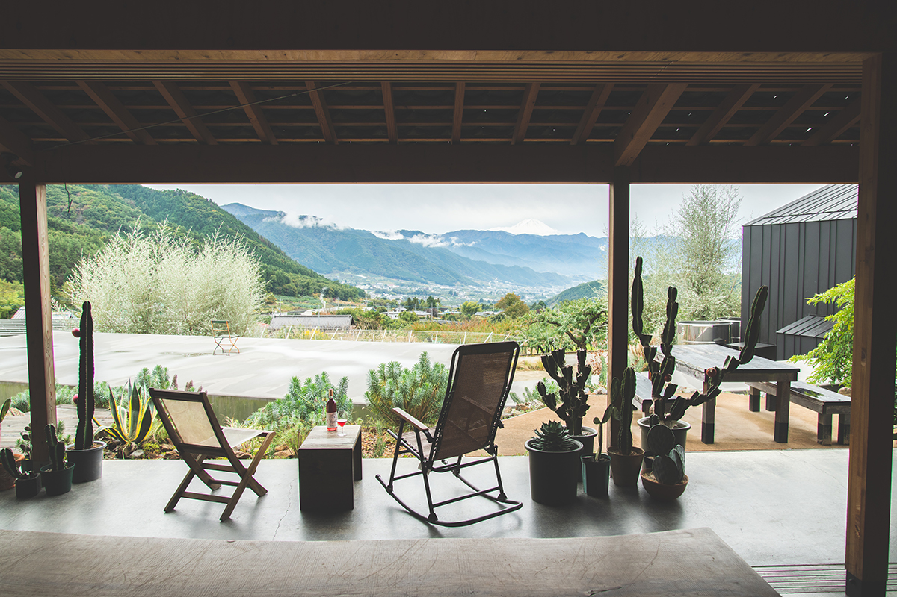
Вокруг Эндзана в городе Косю хватает виноделен и пивоварен, где вино и пиво можно пить с видом на Фудзи. Вот шесть адресов: от молодых хозяйств до семейной винодельни и винного магазина.
Пиво
98BEERs: пивоварня, где можно остаться на ночь
Пивоварню 98BEERs основал винодел Сигэюки Хираяма, хозяин винодельни 98WINEs. Однажды, гуляя с собакой, он наткнулся на бывший корпус отдыха, устроенный в здании старого детского сада, и полностью его перестроил. Получилась пивоварня с гостиницей: второй этаж отдан только постояльцам, а на первом работают тап-рум с лёгкими закусками и лаунж.
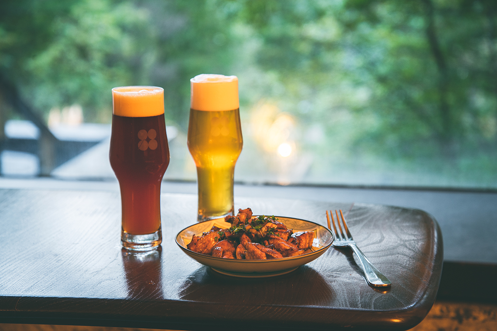
Гостям без ночёвки здесь тоже рады. Можно никуда не спешить, пить крафтовое пиво и смотреть то на пивоварню, то на Фудзи.
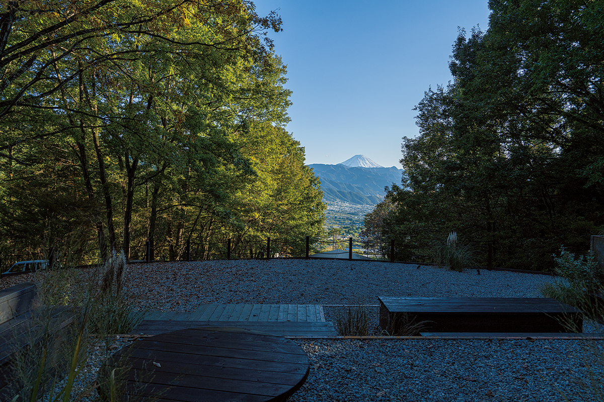
98BEERs
- Часы работы
- 10:00–16:00
- Выходные
- с понедельника по пятницу
Вино
98WINEs: вино и кофе в долине Фукуори
Винодельню 98WINEs Хираяма открыл в Фукуори у Эндзана, в месте, куда однажды заехал случайно и которым сразу очаровался. Над ней работали архитекторы, ландшафтные дизайнеры и другие мастера, все из Яманаси, а сама винодельня выражает взгляд на мир Хираямы, который учился в художественной школе во Франции.
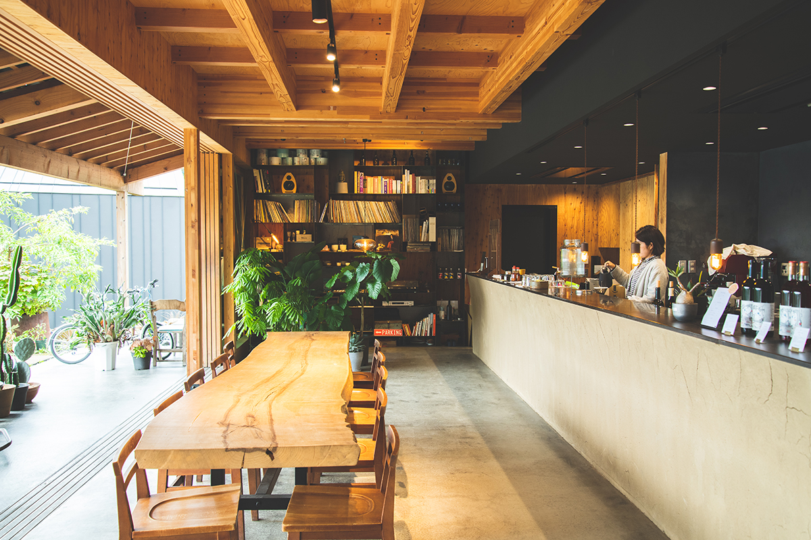
В «Деревянном корпусе» вино не только пробуют: к нему подают чизкейк, который подбирали под вино, и кофе. Рядом стоит «Железный корпус» с винодельческим цехом, а под плоской крышей между террасой и пейзажем прячется «Каменный корпус», погреб, где вино выдерживают.
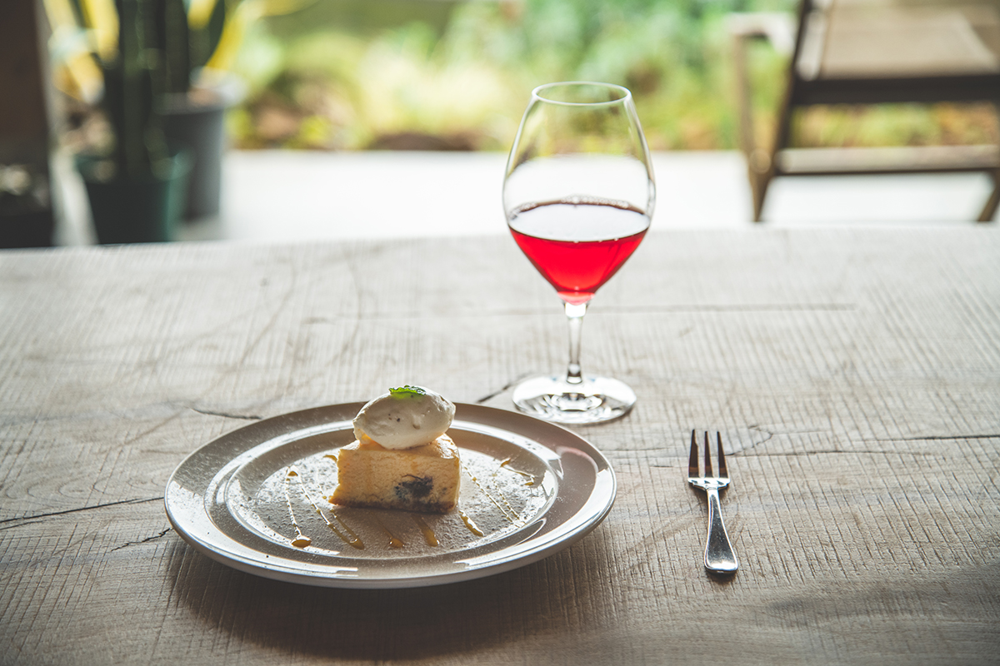
Главное здесь всё же вид. Ради него Хираяма и остался в этой долине.
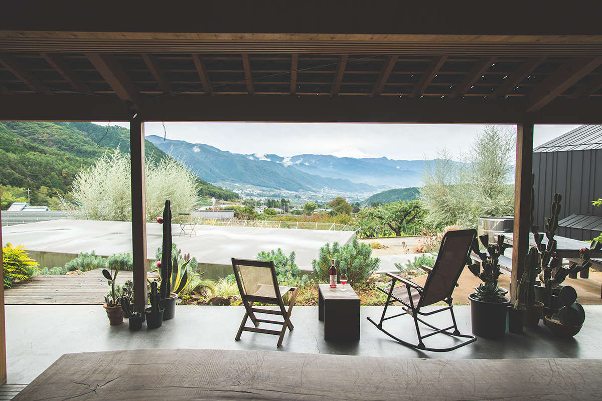
98WINEs
- Адрес
- префектура Яманаси, Косю, Эндзан-Фукуори, 250-1
- Телефон
- +81 553-32-8098
- Часы работы
- 10:00–16:00
- Выходные
- с понедельника по пятницу
- Сайт
- 98wines.jp
Рядом
Ещё четыре адреса вокруг Эндзана
Кроме 98WINEs и гостиницы STAY366 вокруг Эндзана немало других хороших виноделен. Ниже четыре места, которые стоит добавить к маршруту: две молодые винодельни в соседнем городе Яманаси, старая семейная винодельня в Эндзане и винный магазин в Кацунуме.
Винодельня
Cave an: элегантное вино у подножия горы Манрики
Хозяйка Cave an Масако Андзо работала на старой винодельне Marufuji, где делала новаторские вина, а на южном склоне горы Манрики выращивала мерло и пти-манс. В последние годы местные фермеры, оценив её упорство, стали просить её взять их виноградники, и площадь её лоз постепенно росла.
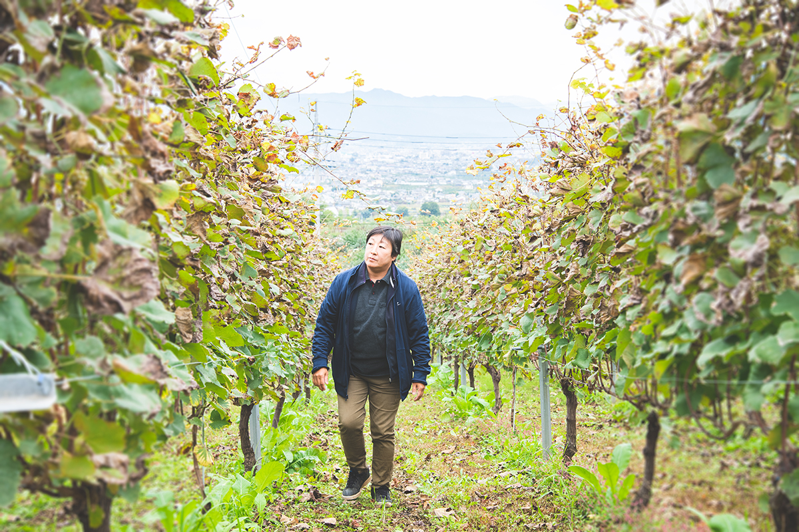
В 2022 году, решив стоять у чанов, пока хватит сил, она основала у подножия горы Манрики собственную винодельню Cave an. Её цель: сбалансированное вино, в котором собран характер этой земли. Хозяйство небольшое, но от него многого ждут.
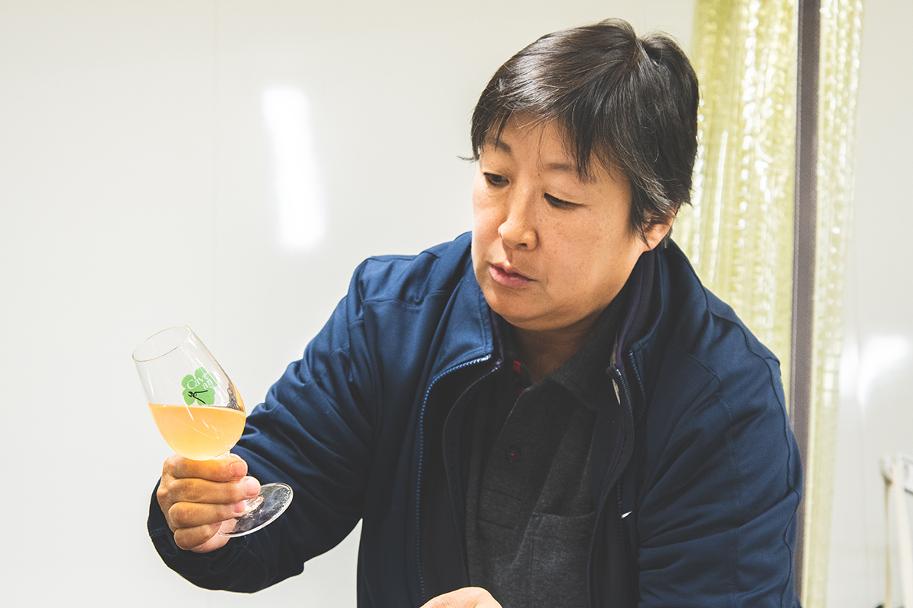
Магазин при винодельне в начале 2023 года собирались открыть весной.
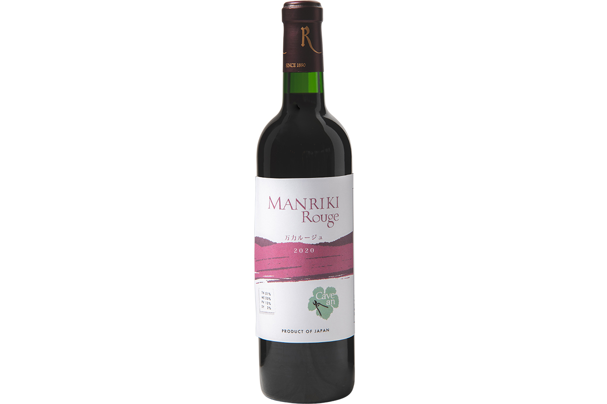
Cave an
- Адрес
- префектура Яманаси, город Яманаси, Манрики, 756-1
Лаборатория
«Вайн-дзукури кэнкюдзё»: винодельня поставщика оборудования
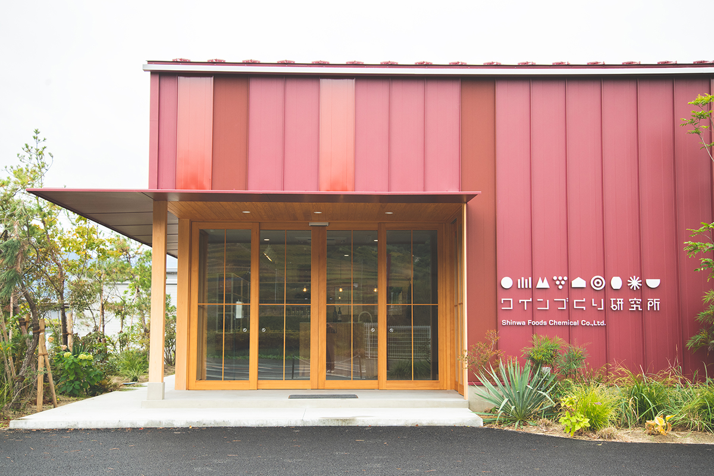
Название переводится как «Лаборатория виноделия». Компания Shinwa Foods Chemical ввозит всё, что нужно виноделам: от материалов для виноградников до оборудования для винодельни и дрожжей. В 2022 году она начала делать вино сама, а винодельня заодно стала шоурумом её продукции. Весной того же года компания заложила собственный виноградник в районе Макиока, к северу от винодельни, на высоте 850 метров.
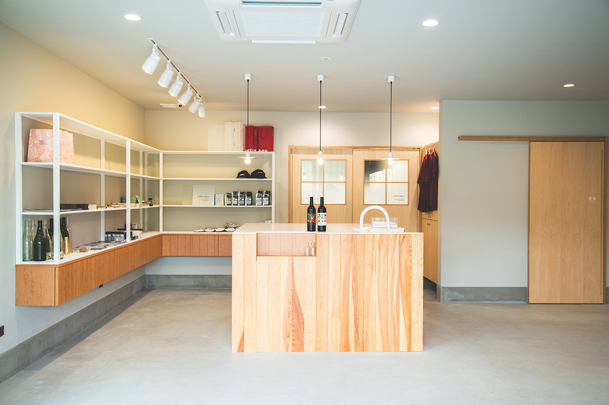
На винодельне стоят яйцевидные бродильные ёмкости и новейшее оборудование, привезённое на пробу. Тем, кто хочет глубже разобраться в том, как делается вино, сюда стоит заглянуть обязательно.
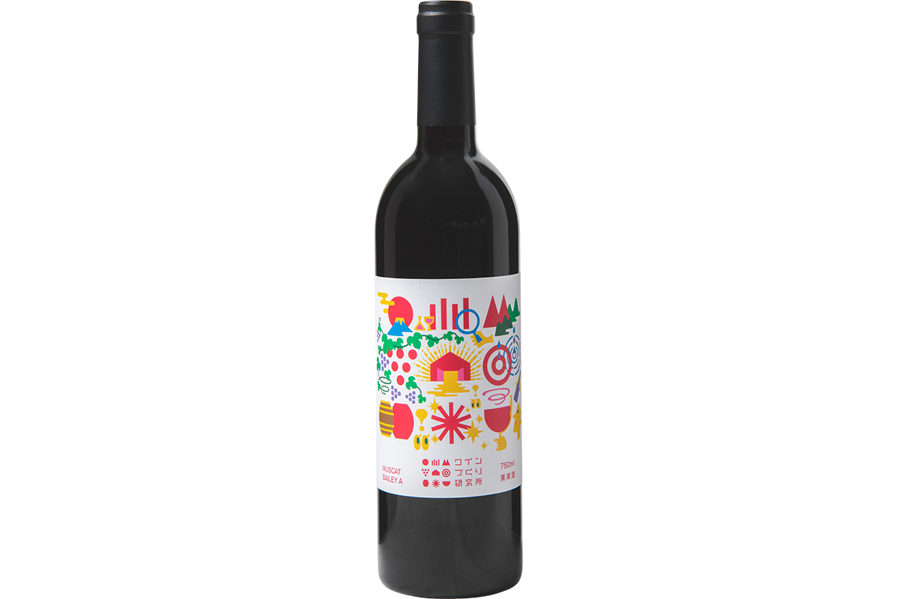
«Вайн-дзукури кэнкюдзё»
- Адрес
- префектура Яманаси, город Яманаси, Манрики, 758-1
- Телефон
- +81 553-34-8772
Классика
Kizan Winery: вино на каждый день с 1930 года
Kizan Winery делает качественное и недорогое вино на каждый день, и за это ей доверяют. Супруги Кодзо и Юкари Цутия выпускают вдвоём 30 000 бутылок в год, хотя обычно с таким объёмом справляются три-четыре человека. Поэтому и сорта винограда, и линейку вин они сознательно сократили до самого нужного.
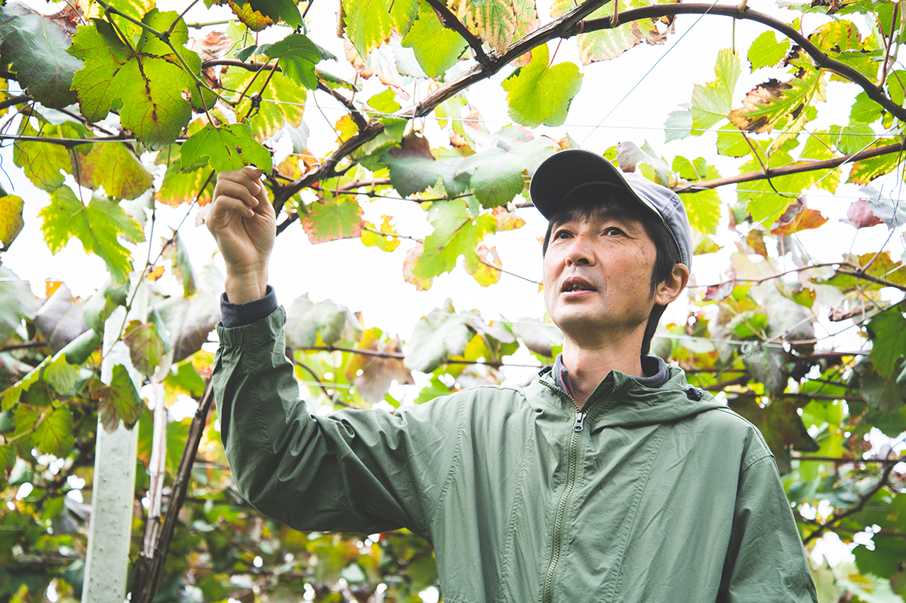
При этом супруги делают и самое трудоёмкое: игристое вино с вторичным брожением в бутылке. Среди поклонников винодельни много профессионалов.
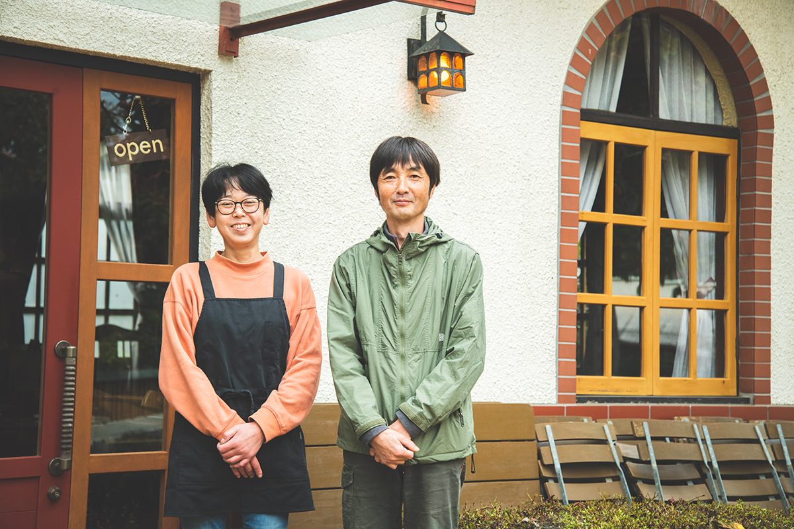
В 2023 году дегустации на винодельне были приостановлены.
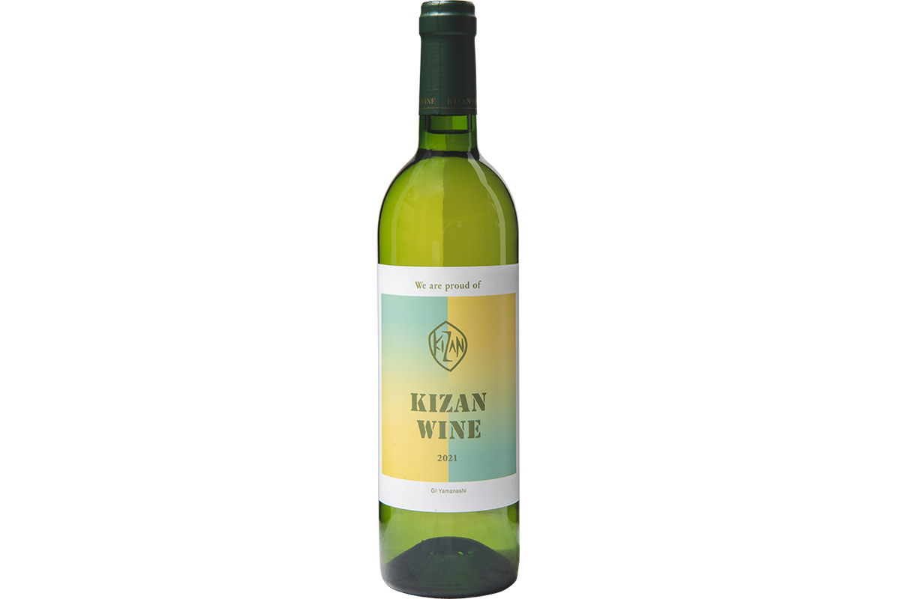
Kizan Winery
- Адрес
- префектура Яманаси, Косю, Эндзан-Миккаитиба, 3313
- Телефон
- +81 553-33-3024 (9:00–16:00)
- Часы работы
- 9:00–16:00 (магазин)
- Выходные
- нерегулярные
- Сайт
- kizan.co.jp
Магазин
«Кацунума вайнери маркет / Нитта сётэн»: вино всей Яманаси
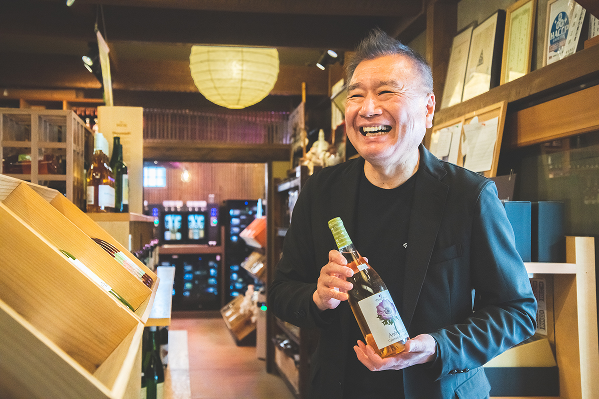
В Кацунуме, винодельческом районе Косю, этот магазин работает как проводник по вину всей префектуры. Хозяин Масааки Нитта отбирает вина 80 виноделен Яманаси. В зале стоят винные автоматы: за плату можно попробовать 18 вин разных сортов, стилей и хозяйств, а понравившееся налить в маленькую бутылку и взять с собой. Если повезёт застать самого хозяина, он расскажет, что нового в виноделии Яманаси.
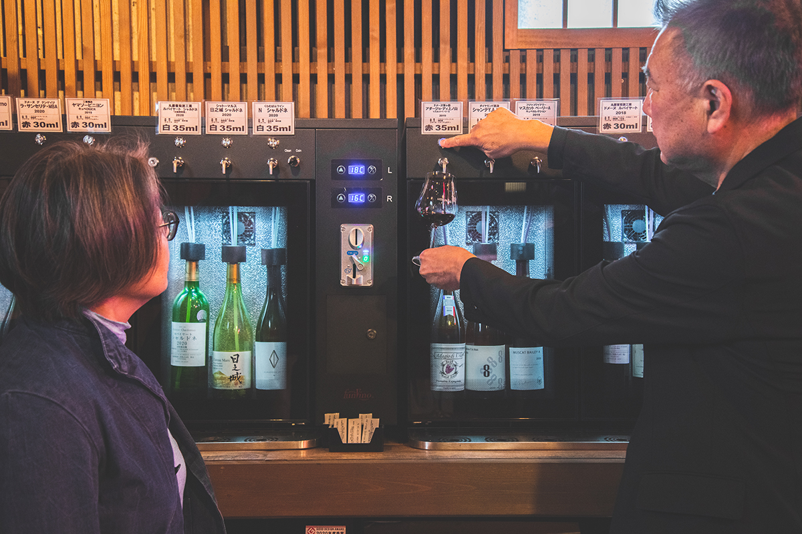
Кроме вина здесь продают другой алкоголь, рис из Яманаси, который шлифуют в самом магазине, и отобранные продукты, так что за сувенирами из Яманаси можно идти именно сюда.
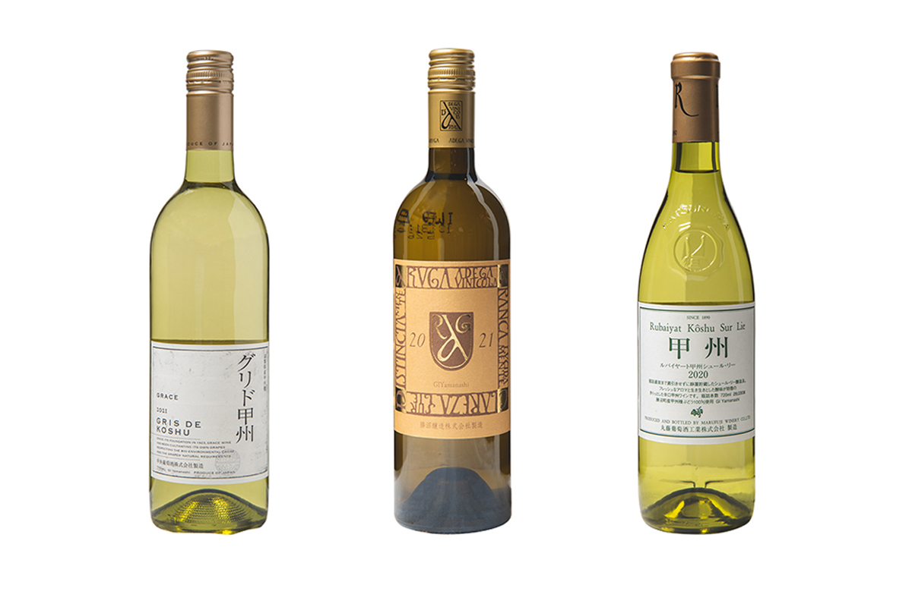
«Кацунума вайнери маркет / Нитта сётэн»
- Адрес
- префектура Яманаси, Косю, Кацунума, Кюсоку, 1560
- Телефон
- +81 553-44-0464
- Часы работы
- 9:00–17:00
- Выходные
- среда
- Сайт
- nitta-shoten.com
Фото: Канако Накамура, Ацуси Ямахира.